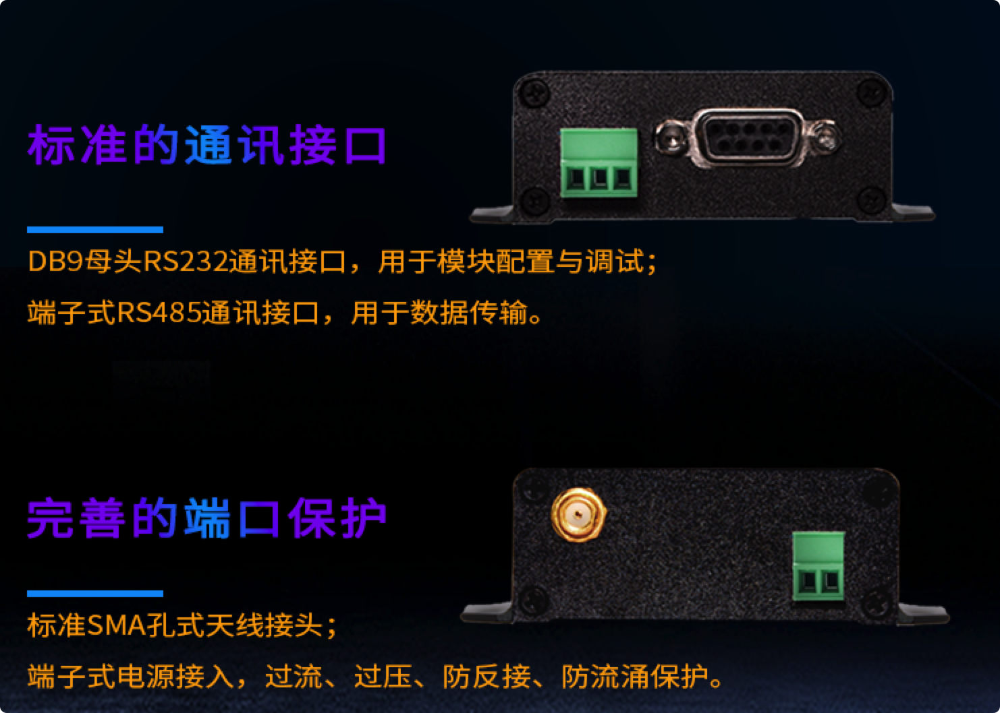
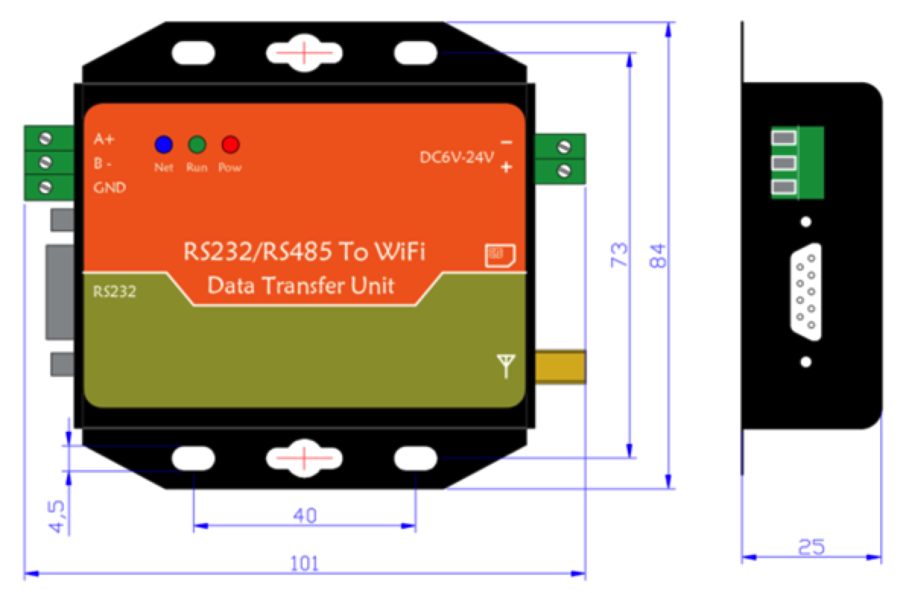
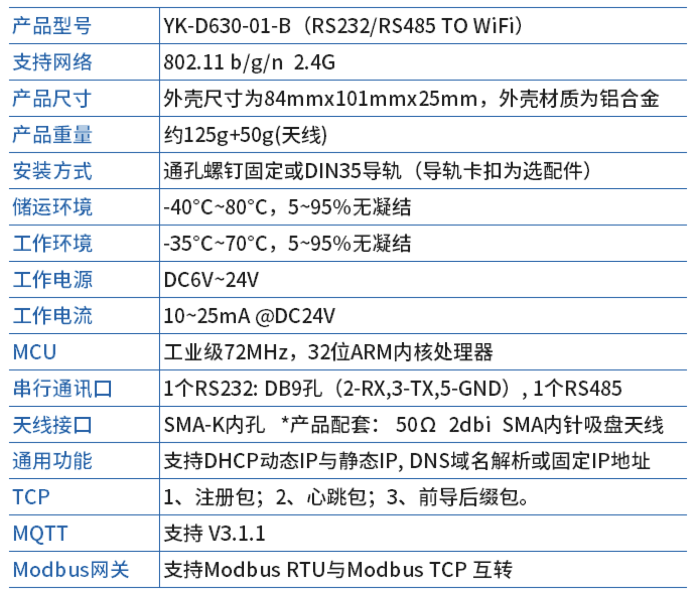
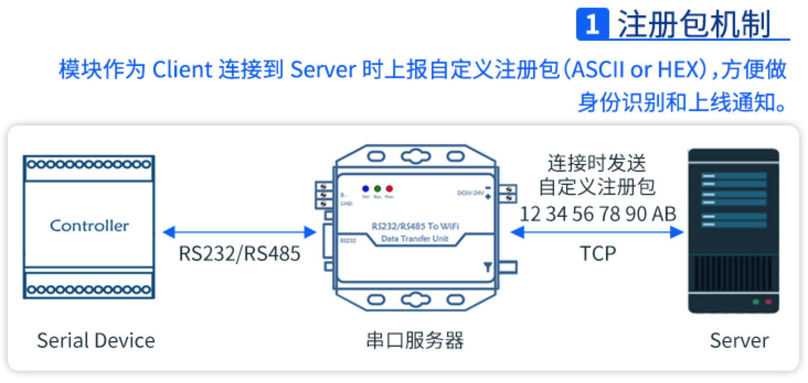
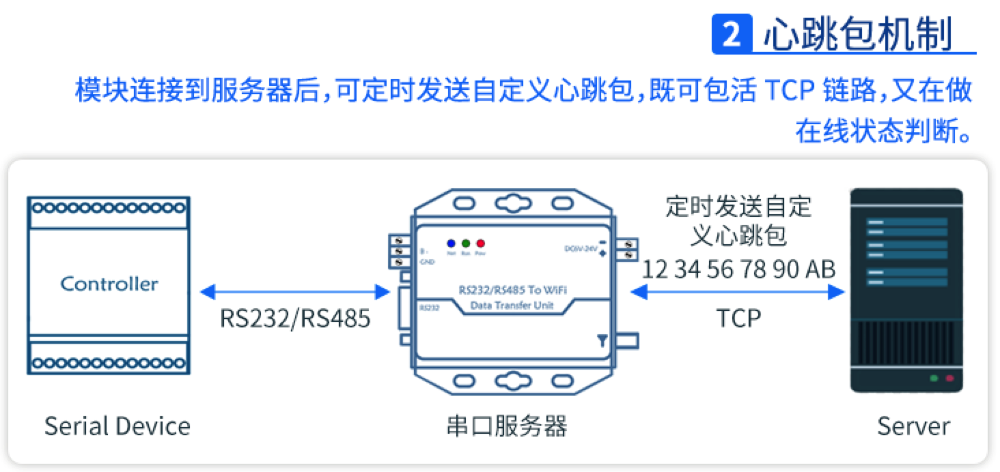
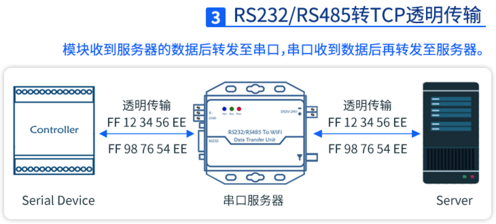
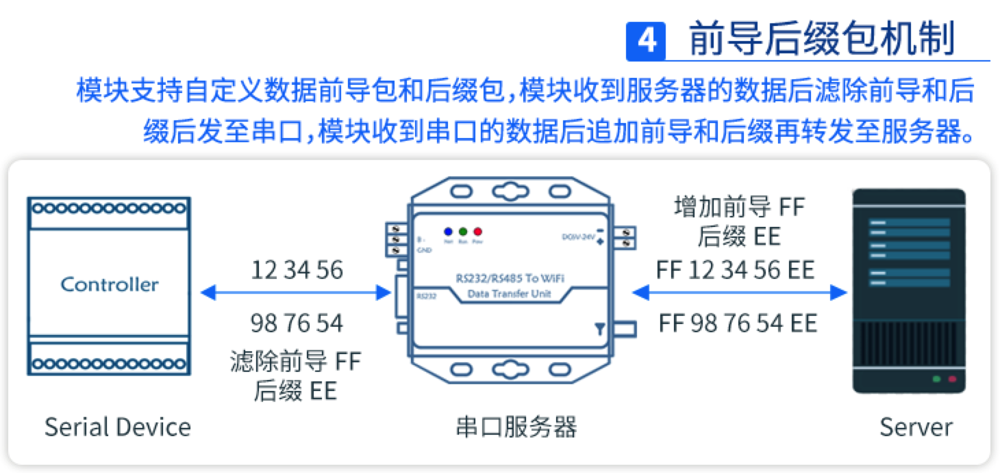

基于Go语言开发物联网项目(数传网关)相关基础

目录
本文介绍了基于go开发物联网相关项目过程中涉及到的基本技术，包括：数据编解码，基础通信协议设计与运行等等。在物联网项目开发过程中，一般均涉及到定制协议的设计与开发，同时一般均以二进制数据进行传送，根据一般的需求，本文提供了相应的软件模板。
数传模块
物联网项目中软硬件的边界是DTU，下面以wifi数传模块为例，介绍典型的DTU相关知识。
DTU 硬件功能（接口）
一个典型的DTU设备如下，包含四个外接端口：R485口（数据口）, R232口（调试口）, 电源口，无线口


典型技术参数（举例）：

DTU 软件功能（协议）




数据编解码
物联网项目的软硬件对接的第一步是进行数据传输协议（数据包格式）的设计，传输方式可以采用很多种，包括TCP/UDP，或MQTT等常用技术。下面就数据包处理方面的基础知识予以介绍。
字节序
计算机硬件中的两种储存数据的方式：
- 大端字节序（big endian）(反序，但与我们”从左到右“阅读习惯一致)
- 高位字节排放在内存的低地址端，低位字节排放在内存的高地址端
- 小端字节序（little endian）（正序，但与“机器”读取数据的顺序一致）
- 低位字节排放在内存的低地址端，高位字节排放在内存的高地址端
一个比较合理的解释：计算机中电路优先处理低位字节，效率比较高，因为计算机都是从低位开始的，所以计算机内部处理都是小端字节序。但是我们平常读写数值的方法，习惯用大端字节序，所以除了计算机的内部，其他场景大都是大端字节序，比如：网络传输和文件储存时都是用的大端字节序。
(1) 判别大小端
func Is_little_endian() bool {
var value int32 = 1
pointer := unsafe.Pointer(&value)
pv := (*byte)(pointer)
if *pv != 1 {
return false
}
return true
}
func main() {
ed := Is_little_endian()
if ed {
fmt.Println("It is Little endian.")
} else {
fmt.Println("It is Big endian.")
}
}
(2) 字节序转化：在涉及到网络传输、文件存储时，因为不同系统的大小端字节序不同，这是就需要大小端转化，才能保证读取到的数据是正确的。（例如ARM采用小端，DSP采用大端，对于TCP/IP网络传输的字节序则固定采用的是大端字节序）
func BtoL() {
var value uint32 = 10
by := make([]byte, 4)
fmt.Println("Original value: ", value)
binary.BigEndian.PutUint32(by, value)
fmt.Println("BigEnd value: ", binary.BigEndian.Uint32(by))
fmt.Println("LitEnd value: ", binary.LittleEndian.Uint32(by))
}
It is Little endian.
Original value: 10
BigEnd value: 10
LitEnd value: 167772160
序列化
在用Go进行数据传输的场景下，例如文件传输或文件存储时，需要将Go的数据例如int转换为[]byte。 得到的
[]byte可以进一步在网络上传输或写入到文件中。这个场景需要借助go标准库中的encoding/binary包来实现。encoding/binary包实现了简单的数字与字节序列的转换以及变长值的编解码。 一个定长值是指要么是固定长度的数字类型（int8, uint8, int16, float32, complex64, …）或者只包含定长值的结构体或者数组。
(1) 基本数据类型序列化
func test_byte_order() {
var num int64 = 15
var buf bytes.Buffer
fmt.Println("Test byte order(3) .................")
fmt.Println("Original Value: ", num)
err := binary.Write(&buf, binary.BigEndian, num)
if err != nil {
tools.Log(err)
return
}
byte_values := buf.Bytes()
fmt.Println("Encode BigEnd value: ", byte_values)
var decoding_num int64
err = binary.Read(&buf, binary.BigEndian, &decoding_num)
if err != nil {
tools.Log(err)
return
}
fmt.Println("Decode BigEnd value: ", decoding_num)
buf.Reset()
err = binary.Write(&buf, binary.LittleEndian, num)
if err != nil {
tools.Log(err)
return
}
byte_values = buf.Bytes()
fmt.Println("Encode LitEnd value: ", byte_values)
err = binary.Read(&buf,binary.LittleEndian, &decoding_num)
if err != nil {
tools.Log(err)
return
}
fmt.Println("Decode LitEnd value: ", decoding_num)
}
Original Value: 15
Encode BigEnd value: [0 0 0 0 0 0 0 15]
Decode BigEnd value: 15
Encode LitEnd value: [15 0 0 0 0 0 0 0]
Decode LitEnd value: 15
基本使用方法：
- binary.Write：这个函数可以将数据序列化成字节流
- binary.Read：这个函数可以将字节流反序列化为数据结构
注意事项：
- 如果编码的结构中有不确定长度的类型，会报错
- 如果是go语言之间的序列化和反序列化推荐使用
encoding/gob包，跨语言的序列化和反序列化可以使用protobuf
(2) 结构体序列化
在写网络程序的时候，我们经常需要将结构体或者整数等数据类型序列化成二进制的buffer串。或者从一个buffer中解析出来一个结构体出来，最典型的就是在协议的header部分表征head length 或者body length在拼包和拆包的过程中，需要按照规定的整数类型进行解析，且涉及到大小端序的问题。
func test_byte_struct_coding() {
fmt.Println("Test byte struct encoding...............")
var a = struct {
One int32
Two int32
}{
int32(1), int32(2),
}
fmt.Printf("a's original value: %#v\n", a)
buf := new(bytes.Buffer)
fmt.Println("a's size is: ", binary.Size(a))
err := binary.Write(buf, binary.LittleEndian, a)
if err != nil {
tools.Log(err)
return
}
fmt.Println("Encode with LitEnd, a: ", buf.Bytes())
buf.Reset()
err = binary.Write(buf, binary.BigEndian, a)
if err != nil {
tools.Log(err)
return
}
fmt.Println("Encode with BigEnd, a: ", buf.Bytes())
}
a's original value: struct { One int32; Two int32 }{One:1, Two:2}
a's size is: 8
Encode with LitEnd, a: [1 0 0 0 2 0 0 0]
Encode with BigEnd, a: [0 0 0 1 0 0 0 2]
协议设计
需求如下：
- It can be anything, but for this example it will be the following. The header will always be 7 bytes long. The first byte, that we call a prefix is always the same, say,
&. The next two bytes denote the length of the *data payload* (without header!), as a little endian integer. The final four bytes are unix time when this data packet was created; again, as a little-endian integer. And then we have the data. If the packet does not start with&, the server should close the connection with the client.- 一个数据包，包含两部分：
- 头部(7个字节)
- 第一个字节，称为前缀，是一个字符 &
- 第二三字节，记录负载长度（不包含头部）（小端序）
- 后四个字节，包的创建时间(unix time)（小端序）
- 负载（变长）
- TCP sockets provide integrity of data and preservance of order. Yet, there is no guarantee that the data block read by our server (in one
conn.Read()call) from socket will be a full packet right away; nor can we be sure that only one packet comes at a time, as several packets may come “glued” together, so the server will have to cut them apart and process them separately. That’s what creates problems with some conventional approaches shown in most tutorials. We have to implement some kind of a buffer and an algorithm that will wait for more data if it is too short, and make several processing runs if the data received so far accomodates several packets.- TCP socket本身提供了数据完整性和顺序性保证，但不保证服务端会立即收到整个数据包，也不能保证一次会只收到一个数据包（也许会一次收到多个连续的数据包，因此服务端需要对数据进行切割，然后对每个包进行分别处理）。因此，针对这些情况，服务端需要提供针对性的处理措施。
服务端（模板）
package main
import (
"bytes"
"encoding/binary"
"fmt"
"io"
"net"
"sync/atomic"
"github.com/pkg/profile"
)
//'&' prefix,
//two bytes for little-endian length of body (excluding header),
//four bytes for time of packet generation (as little-endian Unix timestamp)
const headerSize = 7
const packetPrefix byte = '&'
//simply for debug purposes
// 调试：记录已经收到的包的数量
var counter uint64
//dummy function simulating packet processing
// 一个模拟处理包的函数
func processPacket(packet []byte) {
//optional sleeping to simulate processing delay
// 可以模拟处理包引入的延时
//time.Sleep(time.Millisecond * 3)
//just a debug counter to track the total number of processed packets
atomic.AddUint64(&counter, 1)
count := atomic.LoadUint64(&counter)
if count%1000000 == 0 {
// 可以根据情况调整显示包个数的阈值，例如10个
fmt.Println(count)
}
}
func main() {
listener, err := net.Listen("tcp", "127.0.0.1:10002")
if err != nil {
tools.Log(err)
return
}
defer listener.Close()
//Main connection-managing loop
for {
conn, err := listener.Accept()
if err != nil {
fmt.Println("Could not connect", err.Error())
// 注意：在连接出错时，不能调用 close 进行关闭连接
//not calling `conn.Close()` because `conn` is `nil` in case of error.
//See `AcceptTCP` source.
continue
}
// 对每一个连接，启动一个线程进行处理
go processorRoutine(conn)
}
}
包处理
读取本次连接接收到达的所有数据
// 每次读取最大长度（实际数据长度大于此长度时，会在下一次继续读取）
const deviceReadBufferSize = 1024
func processorRoutine(conn *net.TCPConn) {
defer conn.Close()
// Convenient storage
// 实际数据
localBuffer := new(bytes.Buffer)
// Temporary storage for reading from socket.
// 临时缓冲区
readBuf := make([]byte, deviceReadBufferSize)
for {
// Get the data. There can be more than one packets glued together.
// 读取收到的数据，放入临时缓冲区
// As a side note, if the amount of data that came into the socket is larger than readBuf can store, more of it will simply be read on the next iteration.
// 如果实际到达的数据长度大于临时缓冲区的大小，则处理已读出的部分，剩余的部分将会在下一个循环被读出，进行追加处理
dataLen, err := conn.Read(readBuf)
if err != nil {
if err == io.EOF {
fmt.Println("Connection closed by client!")
break
}
}
//dumping to buffer for further processing
// 根据实际读取的数据长度，将本次实际读取的数据追加写入“实际数据缓冲区”中
localBuffer.Write(readBuf[:dataLen])
// 对已经收到的数据进行处理
terminateConnection := processExistingData(localBuffer)
if terminateConnection {
// 如果检测到收到的数据是非法包（不知如何处理），就跳出循环，终止本次连接
break
}
}
}
对已经收到的数据，根据协议约定进行处理（例如：查找包头，提取包负载等等）
func processExistingData(data *bytes.Buffer) (terminateConnection bool) {
terminateConnection = false
for {
// if the prefix is wrong - disconnect.
// 查找包头前缀，如果第一个字节不是约定的包前缀，则判定为非法数据，直接返回，终止处理当前已经收到的数据（也就是接收本次连接）
// 可以根据实际情况，约定多种前缀，表明可以处理多种协议包
if data.Bytes()[0] != packetPrefix {
fmt.Println("Wrong packet prefix! Disconnecting!")
terminateConnection = true
return
}
// if the header is fully loaded, get the packet length (without header)
// 检查当前数据中是否包含完整的包头
var payloadSize int
if data.Len() > headerSize {
// 包含完整的包头，则提取负载长度
payloadSize = int(binary.LittleEndian.Uint16(data.Bytes()[1:3]))
} else {
// incomplete header
// 不包含完整的包头，则返回，继续读取数据
return
}
// 检查已经收到的数据长度，是否已经包含了完整的数据包（含完整的包头和负载）
packetSize := headerSize + payloadSize
if data.Len() < packetSize {
//incomplete packet
// 负载数据不完整，则返回，继续读取数据
return
}
// 提取一个完整的数据包
packet := data.Next(packetSize)
// 对该数据包进行处理（前面提到的一个模拟包处理函数）
processPacket(packet)
// 检查缓冲区中是否含有未处理的数据
if data.Len() == 0 {
// 数据已经全部处理完成，返回，继续读取数据（可能包含下一个新的数据包）
return
}
}
}
Bytes.Buffer 包的重要成员方法：
- new(bytes.Buffer)
- 创建一个Buffer对象
- Buffer缓冲区是一个可变大小的带有读和写方法的字节缓冲区。Buffer 的零值是一个准备使用的空缓冲区。Buffer不需要初始化。
- Buffer.Bytes() []byte
- 返回一段长度 b.Len()的字节，其中包含缓冲区的未读部分。该切片仅在下一次缓冲区修改之前有效（即，直到下一次调用 Read，Write，Reset或Truncate 之类的方法）。
- Buffer.Len() int
- Len 返回缓冲区未读部分的字节数；b.Len() == len(b.Bytes()）
- Buffer.Next(n int) []byte
- 返回包含来自缓冲区的下n个字节的切片。如果缓冲区中少于n个字节，则 Next 返回整个缓冲区
- Buffer.Read(p []byte) (n int, err error)
- 从缓冲区中读取下一个 len(p) 字节，或者直到缓冲区被耗尽。
- Buffer.Write(p []byte) (n int, err error)
- 将 p 的内容附加到缓冲区，根据需要增加缓冲区。返回值n是 p 的长度； err 总是零
- Buffer.Reset()
- Reset将缓冲区重置为空
客户端（模板）
type Packet_head struct {
Prefix byte
Length uint16
Create_at uint32
}
func New_packet(text string) (header []byte, payload []byte) {
var ph = Packet_head{}
ph.Prefix = '&'
pb := new(bytes.Buffer)
pb.WriteString(text)
ph.Length = uint16(pb.Len())
ph.Create_at = uint32(time.Time{}.Unix())
hb := new(bytes.Buffer)
_ = binary.Write(hb, binary.LittleEndian, ph)
return hb.Bytes(), pb.Bytes()
}
func main() {
conn, err := net.Dial("tcp", "127.0.0.1:10002")
if err != nil {
tools.Log(err)
return
}
defer conn.Close()
pkt_head, pkt_payload := New_packet(strings.Repeat("hello ", 5))
packet := new(bytes.Buffer)
packet.Write(pkt_head)
packet.Write(pkt_payload)
//tools.Log("packet: ", packet)
n, err := conn.Write(packet.Bytes())
if err != nil {
tools.Log(err)
return
}
fmt.Printf("Send %d bytes: %#v\n", n, packet.Bytes())
}
注意：使用bytes.Write() 时，必须是固定长度的数据（例如结构体中不能包括interface成员），因此在客户端构造数据包时，需要分别构造固定长度的包头，和变长的负载。
测试
go run server.go
Got packet.payload: hello hello hello hello hello
Connection closed by client!
说明：本文提供的服务器模板，未支持keeplive，未向客户端返回响应数据。